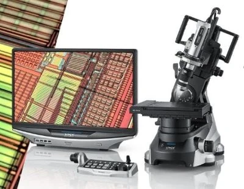

Bài viết gốc bằng tiếng Việt

Keyence High-Resolution Digital Microscope
|
Model / Số hiệu: |
Model: VHX-7000N / VHX-9000-W | Code: JWRI-18 |
|
Thông số kỹ thuật |
[VN] Màn hình hiển thị LCD tích hợp công nghệ xử lý ảnh nâng cao; Độ phóng đại từ 20x đến 6.000x; Chức năng dựng hình 3D độ sâu trường ảnh siêu rộng, đo kích thước tự động 2D/3D. |
|
Chức năng & Ứng dụng |
[VN] Quan sát hình thái bề mặt mối hàn, phân tích kích thước hạt, diện tích ngấu, khuyết tật nứt/rỗ khí, đo độ nhám bề mặt 3D và dựng bản đồ độ cao vùng hàn. |